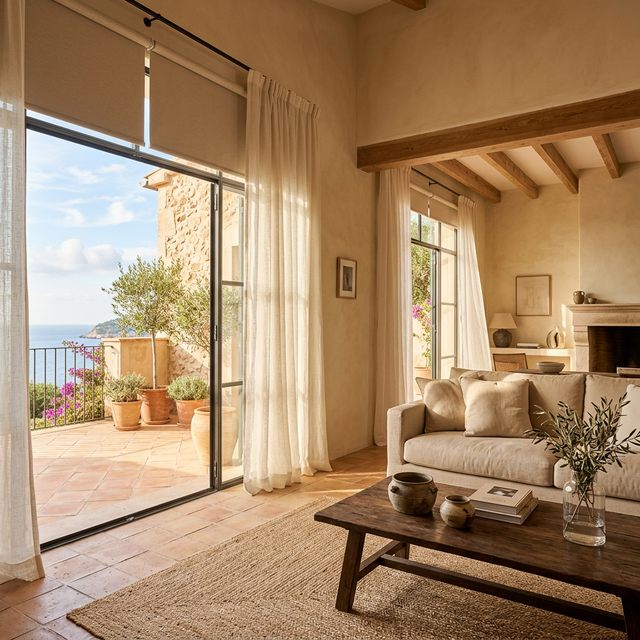

La solución más versátil para controlar la luz en tu hogar. Nuestras cortinas enrollables combinan funcionalidad, diseño minimalista y tejidos técnicos de última generación. Ideales para cualquier estancia, desde salones panorámicos hasta oficinas con grandes ventanales.
Tejidos screen que filtran hasta el 95% de los rayos UV sin bloquear la vista exterior.
Desde tejidos traslúcidos que mantienen la luminosidad hasta opacos que oscurecen por completo.
Accionamiento por cadena, manivela o motor eléctrico con opción de domótica integrada.
Confeccionadas exactamente a las dimensiones de tus ventanas. Medición láser incluida.
Marcas con las que trabajamos
Nuestro showroom móvil lleva el muestrario completo de cortinas enrollables directamente a tu hogar en las Islas Baleares. Visita gratuita, sin compromiso.